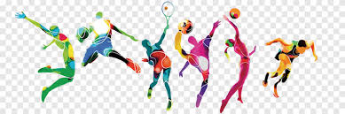

| INICIO. |
que es la educacion fisica |
flexibilidad |
mejores ejercios |
medidas de las canchas |
reglas de los juegos |
>
flexibilidad
la flexibilidad, es la capacidad del cuerpo humano de mover una articulacion por todo el rango de moviemiento sin sufrir
lesiones, es una de las capacidades fisicas basicas que se desarrollan en la educacion fisica y el deporte.
la flexibilidad es importante para el desarrollo de la fuerza, la resistencia y la coordinacion, ademas de prevenir lesiones y mejorar el rendimiento fisico.
la flexibilidad se puede mejorar a traves de ejercicios de estiramiento, que ayudan a aumentar la movilidad y la elasticidad de los musculos y las articulaciones.
es importante realizar ejercicios de estiramiento de manera regular para mantener una buena flexibilidad y prevenir lesiones.
ademas, la flexibilidad es una habilidad que se puede desarrollar a cualquier edad, por lo que es importante incluirla en la rutina de ejercicios de todas las personas.
ejercicios para desarrollarla pueden ser estiramientos basicos, como tratar de tocarse la punta de los pies tanto parado y sentado
o estiramientos de brazos y piernas, que ayudan a mejorar la movilidad y la elasticidad de los musculos y las articulaciones.
ademas, es importante realizar ejercicios de calentamiento antes de realizar cualquier actividad fisica para preparar el cuerpo y prevenir lesiones.